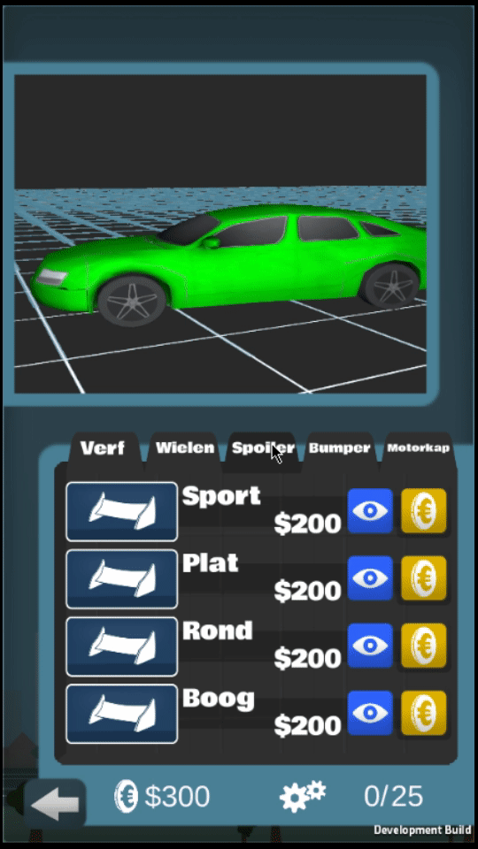
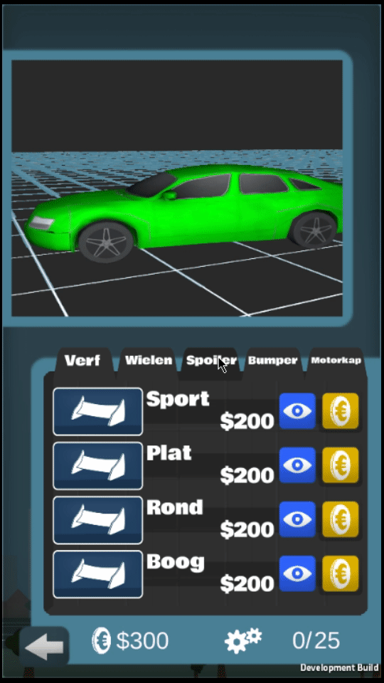

Driver's Theory app

 


My internship assignment
My assignment for this internship was to make a mobile serious-game for intellectually disabled people who struggle to study for their driver's theory exam.
As the programmer in a team, I worked on creating all functionality in the game. This included UI, Level selection, driving simulation, setting up question-situations, creating a levelling-system, game economy and the customizable car.
The design and assets were made by some very talented Saxion students at the time.
This was the first ambitious project I worked on. Looking back on it, I am still impressed by the overall product. It was a succesfull first prototype, as the company continued the idea forward with a new team.
Additional projects
After the internship was over, GameLab Oost asked me to stay for an additional few months to help out on one of their projects at the time.
My new task was to make 2 mini-games for one of their iPad apps. These 2 games were made simultaneously so managing the 2 was a challenge.
More on them below.
Obstacle Course

Fun to make
From the 2 projects, this one seemed the most interesting. The design was mostly set in stone, so I all I had to do was make it.
The game is controlled though touch-controls on an iPad. The player will move one tile into the input-direction, snapping to moving tiles to make the game more accessible to the target audience.
BattleShips
Project
BattleShips is a classic boardgame, and recreating it in Unity was a fun challenge. I'm happy with how the project came together in such a small amount of time.
It's played in 2 phases. Setup and gameplay.
Setup
The setup phase is where the player sets up their battleships. They can't overlap or stick outside the board.
After the player places their ships and confirms, it's the CPU's turn to generate random ship-positions. These are the exact same ships as the player uses.
Gameplay
After that, it's time for the player to guess where the CPU has placed their ships and vice versa. Each time the CPU hits a player ship, it'll sink on the bottom board.
If the player guesses ship's position correctly, it'll be marked with an O on the map. Guess wrong and it'll be an X.
Conclusion
That was it. Thanks for reading this page.
Do you have anything to say on the projects listed or do you feel like chatting? Find me on the social media accounts below.


Press the button below to return to the home page